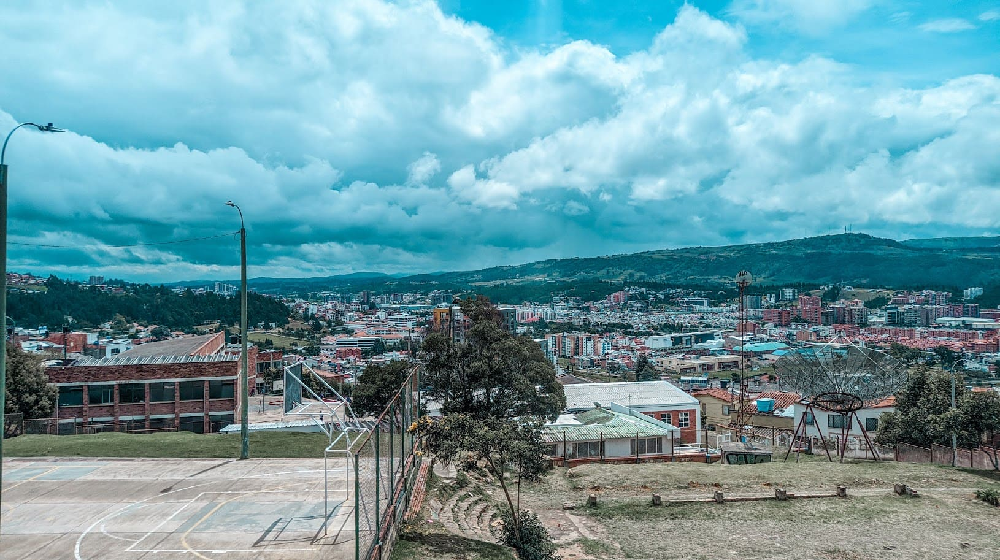

Historia y cultura
Introducción breve sobre la fundación de Tunja
Tunja, fundada el 6 de agosto de 1539 por Gonzalo Suárez Rendón sobre el antiguo asentamiento muisca de Hunza, se convirtió en uno de los principales centros políticos, religiosos y culturales de la época colonial. Conocida como la “Cuna y Taller de la Libertad”, tuvo un papel decisivo en el proceso de independencia de Colombia y aún hoy conserva calles, templos y monumentos que narran su rica historia y tradición.

